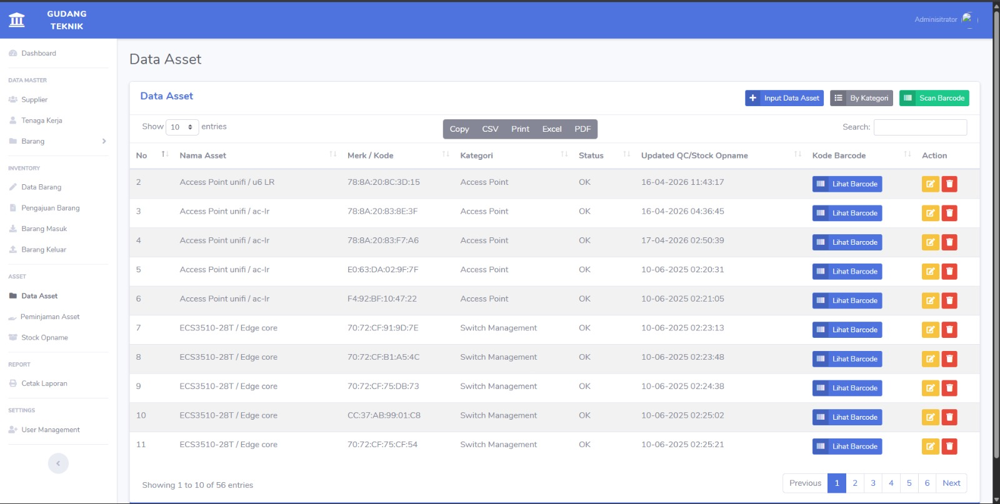
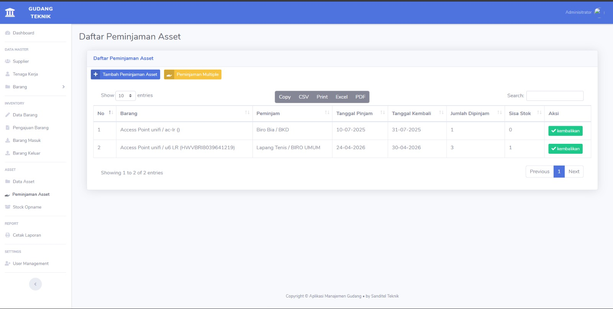
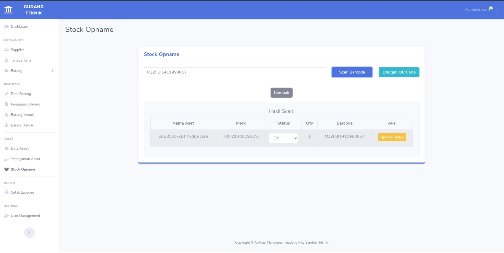
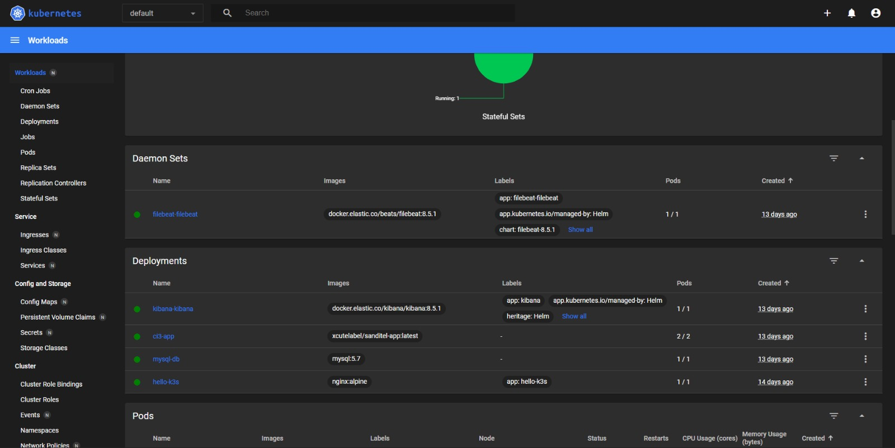
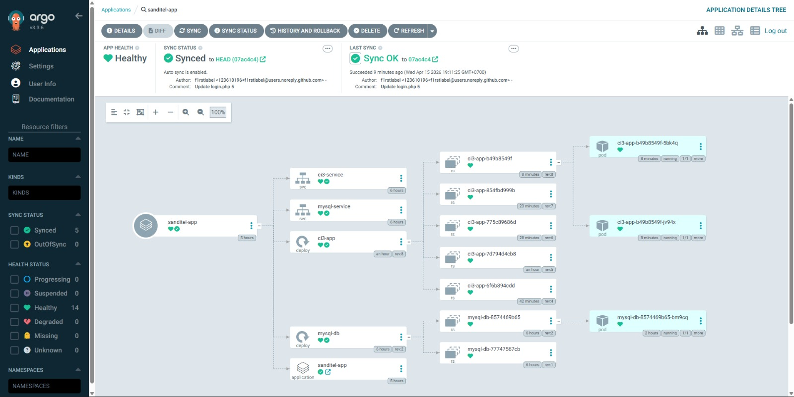
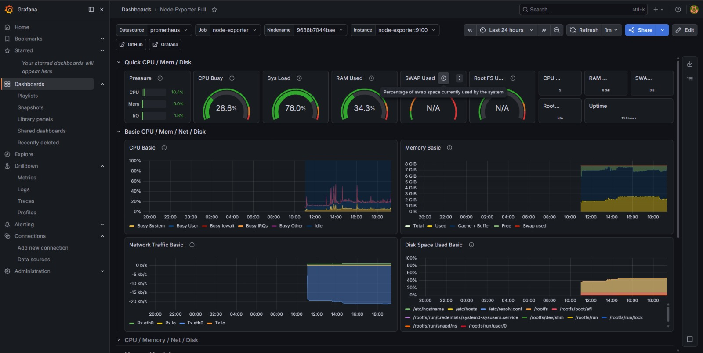
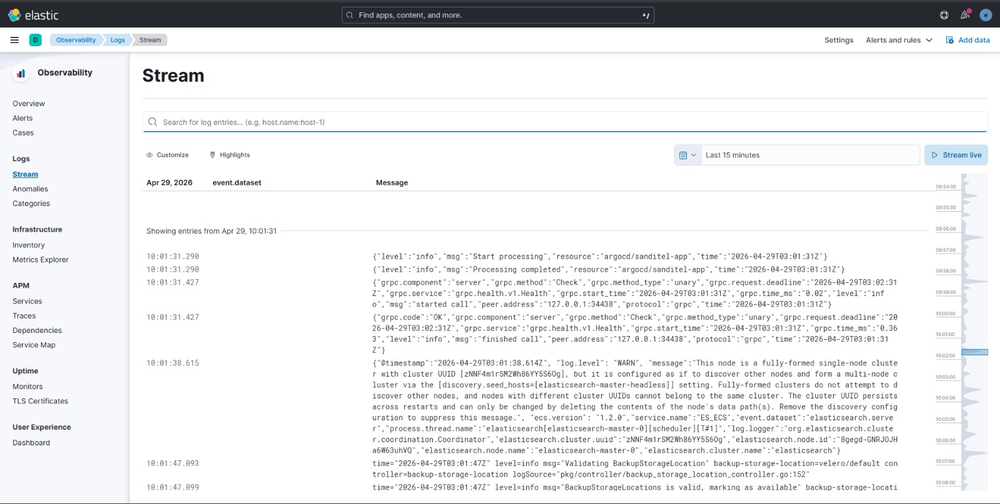
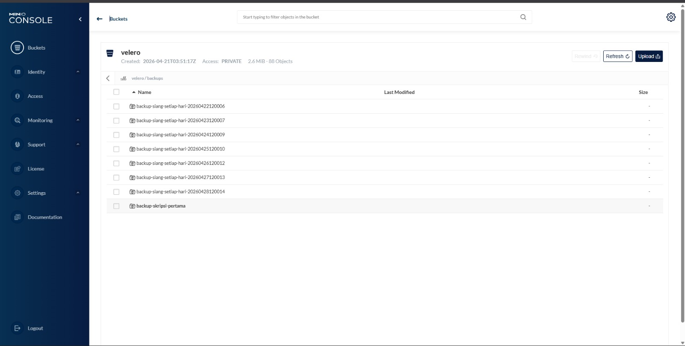

Regy Kurnia
NETWORK ENGINEERING
Enterprise Inventory Management System
Full-stack Web Application Development
2024
Pengembangan sistem informasi manajemen inventori berbasis web yang dirancang untuk mengelola siklus hidup aset perusahaan secara digital. Aplikasi ini dibangun menggunakan arsitektur MVC (Model-View-Controller) guna memastikan struktur kode yang rapi, modular, dan mudah untuk dikembangkan di masa depan.
1. Modul Manajemen Aset (Core Data)
Fungsi dalam Proyek: Sebagai pusat database untuk mengelola seluruh data barang (inventaris).
Modul ini mencatat detail spesifikasi barang, kategori, hingga nilai aset.
Implementasi: Memungkinkan admin untuk melakukan operasi CRUD (Create, Read,
Update, Delete) pada ribuan data aset secara terpusat dan efisien.

2. Sistem Transaksi Peminjaman (Workflow)
Fungsi dalam Proyek: Mengatur alur peminjaman barang antar departemen atau user. Sistem secara
otomatis memantau ketersediaan stok barang saat proses peminjaman dilakukan.
Implementasi: Mengurangi risiko hilangnya aset dengan mencatat siapa, kapan,
dan barang apa yang dipinjam secara real-time.

3. Audit Kondisi & Stock Opname (Quality Control)
Fungsi dalam Proyek: Fitur verifikasi kondisi fisik barang. Modul ini memungkinkan perubahan
status barang secara dinamis (contoh: dari kondisi "OK" menjadi "Rusak") setelah proses pengembalian.
Implementasi: Menjamin akurasi laporan inventaris bulanan dan memudahkan
proses perencanaan pengadaan barang baru.

Tech Stack: CodeIgniter 3 (PHP), MySQL, Bootstrap CSS, JavaScript.
Advanced DevOps & Cloud Infrastructure Engineering
Sistem Otomatisasi & Orkestrasi End-to-End
2025 - 2026
Proyek ini merupakan perancangan infrastruktur berbasis Cloud-Native yang mengelola seluruh siklus hidup aplikasi secara otomatis. Implementasi ini bertujuan untuk menciptakan ekosistem server yang memiliki ketahanan tinggi (High Availability), pemantauan terpusat, dan pemulihan data yang instan jika terjadi kegagalan sistem.
1. Orkestrasi Kontainer (Kubernetes / K3s)
Fungsi dalam Proyek: Sebagai pusat kendali (orchestrator) yang menjalankan seluruh layanan
aplikasi. Kubernetes bertanggung jawab mengelola Pods dan ReplicaSets. Jika aplikasi
mengalami crash, Kubernetes akan melakukan Self-Healing dengan menjalankan ulang kontainer secara
otomatis tanpa campur tangan manusia.
Implementasi: Digunakan untuk menjaga uptime aplikasi Inventory agar selalu
dapat diakses 24/7.

2. Pipeline Otomatisasi (GitHub Actions & Argo CD)
Fungsi dalam Proyek: Menghilangkan proses update manual. GitHub Actions berfungsi
melakukan build otomatis saat saya melakukan push kode. Kemudian, Argo CD menerapkan
metodologi GitOps, di mana ia akan mensinkronisasi kondisi cluster Kubernetes agar selalu sama
dengan repositori di GitHub.
Implementasi: Mempercepat proses deployment fitur baru pada website tanpa
menyebabkan downtime.


3. Real-Time Infrastructure Monitoring (Prometheus & Grafana)
Fungsi dalam Proyek: Bertindak sebagai "panel instrumen" server. Prometheus mengumpulkan
data metrik (penggunaan CPU, RAM, Suhu, dan Jaringan), sementara Grafana mengubah data tersebut
menjadi dashboard visual yang informatif.
Implementasi: Memantau beban kerja server Ubuntu saat menjalankan beban
aplikasi yang berat agar performa tetap terjaga.

4. Centralized Logging (ELK Stack / Kibana)
Fungsi dalam Proyek: Sebagai "kotak hitam" atau pusat pencatatan aktivitas. Setiap error pada
aplikasi atau aktivitas user akan dikirim ke Elasticsearch dan ditampilkan secara rapi di
Kibana.
Implementasi: Memudahkan pelacakan penyebab error (debugging) pada backend
Laravel/CI3 tanpa harus membuka log di terminal secara manual.

5. Disaster Recovery (Velero & MinIO)
Fungsi dalam Proyek: Penjamin keamanan data tingkat tinggi. Velero melakukan snapshot
seluruh cluster dan database, lalu menyimpannya ke MinIO yang berfungsi sebagai penyimpanan objek
berbasis S3.
Implementasi: Melindungi data skripsi dari kerusakan permanen. Jika cluster
rusak, seluruh sistem bisa dikembalikan (restore) dalam hitungan menit.

Technical Stack & Tools
Cloud & Orchestration
- Kubernetes (K3s)
- Docker & Docker Compose
- Ubuntu Server (Linux)
Automation & CI/CD
- GitHub Actions (CI)
- Argo CD (GitOps)
- Container Registry (Docker Hub)
Monitoring & Logging
- Prometheus & Node Exporter
- Grafana (Visualization)
- ELK Stack (Kibana, Elasticsearch)
Storage & Backup
- Velero (Disaster Recovery)
- MinIO (S3 Object Storage)
- Longhorn / Local Path Provisioner